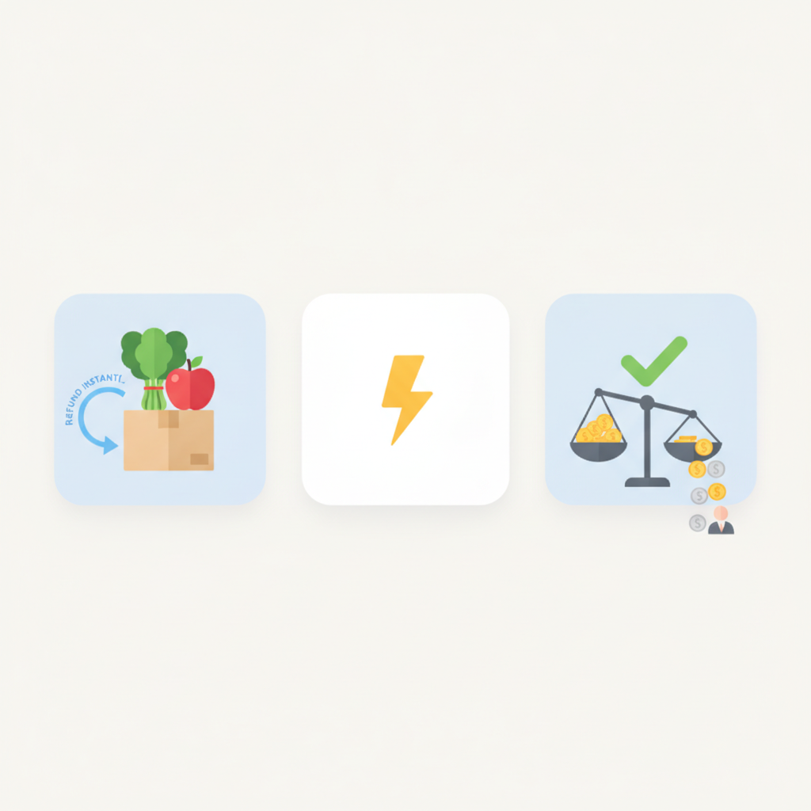
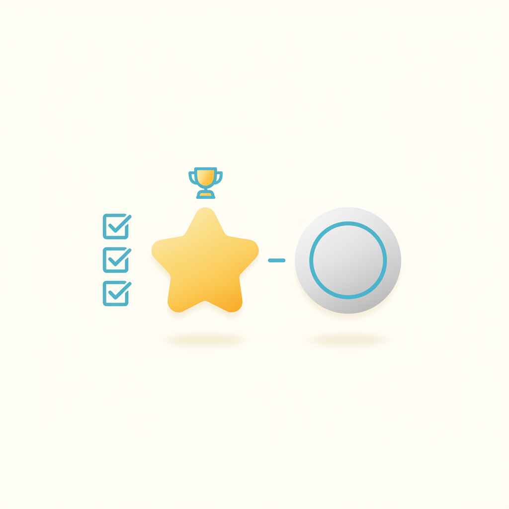
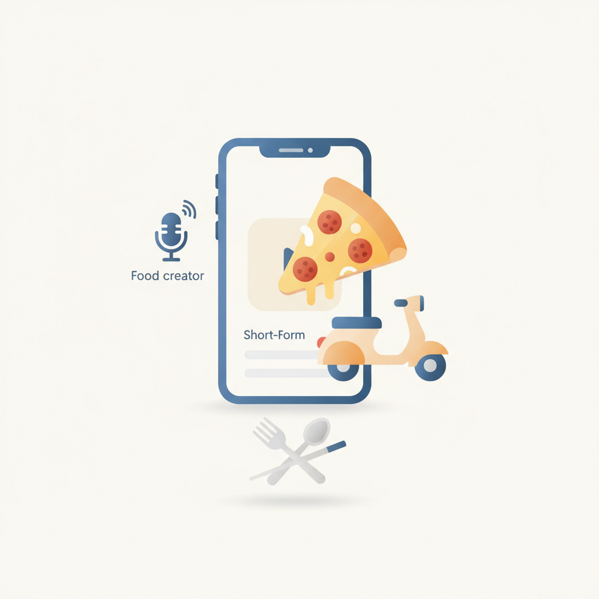
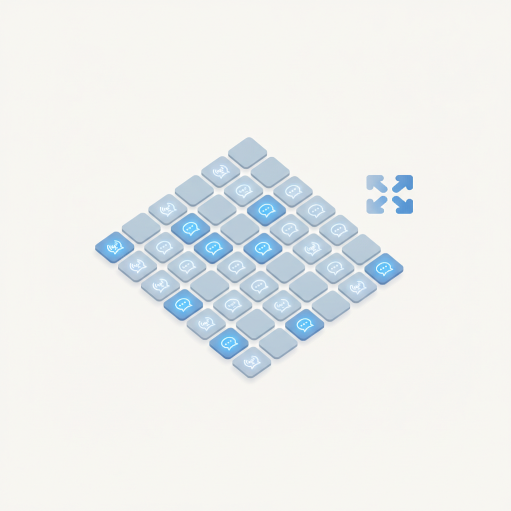
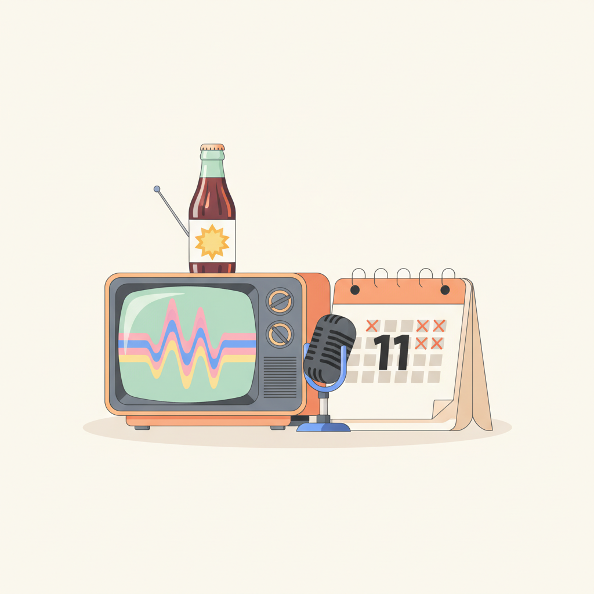
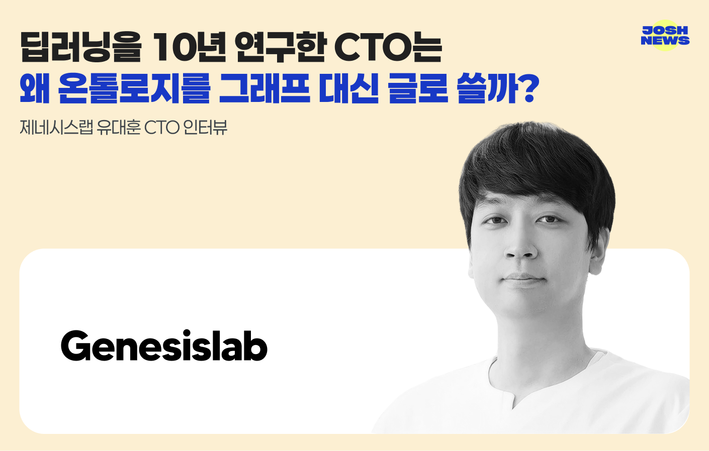

안녕하세요! 수요일 마케팅 소식 전해드립니다 😊 오늘은 롯데칠성의 캡틴큐 재출시 캠페인이 흥미롭습니다. 단종 11년 만의 귀환인데, '전설의 부활'이라는 콘셉트 아래 80년대 감성을 정면으로 끌어안은 방식이 인상적입니다. 단순한 향수 자극에 그치지 않고, 그 시절을 기억하는 세대와 처음 접하는 세대 모두에게 말을 걸 수 있는 구조를 어떻게 설계하느냐가 이번 캠페인의 핵심 과제일 텐데, 레트로 감성이 하나의 마케팅 문법으로 자리 잡은 요즘 시장에서 브랜드 부활 서사를 어떤 방식으로 풀어내는지 살펴볼 만합니다.
오늘의 마케팅 뉴스에서는 드라마 시청률과 화제성의 괴리 이야기도 짚어볼 만합니다. 코바코 분석에 따르면 드라마 3편 중 1편은 가구 시청률과 온라인 화제성이 반대 방향으로 나타났는데, 광고 집행 기준으로 시청률 하나만 들여다보면 실제 소비자 반응을 절반도 읽지 못하는 셈입니다. 어떤 지표를 기준으로 콘텐츠 매체를 선택하느냐가 결국 예산의 효율과 브랜드 노출의 질을 가르는 문제로 이어지는 만큼, 광고 집행 판단 기준 자체를 다시 점검해볼 계기가 됩니다.
한 주의 중반, 오늘 하루도 좋은 인사이트로 힘차게 시작하시길 바랍니다! 💡
더블베리파이(DoubleVerify) 조사에 따르면 전 세계 소셜미디어 광고비가 올해 4080억 달러를 돌파할 전망이다. 소비자 4명 중 1명은 최근 1년간 소셜미디어에서 직접 구매한 경험이 있는 것으로 나타났다. 플랫폼별 이용자 특성과 광고 반응이 다르고 AI 콘텐츠에 대한 소비자 인식도 엇갈려, 마케터는 플랫폼별 세분화된 전략과 AI 콘텐츠 활용 방식을 재검토할 필요가 있다.
›
2쿠팡·네이버·토스 등 국내 주요 이커머스 플랫폼이 잇달아 반품 정책을 강화하고 있다. 쿠팡은 마켓플레이스 신선 상품을 회수 없이 즉시 환불하고, 토스는 멤버십 회원 대상 10만 원 이하 상품에 무조건 선환불을 적용한다. 소비자 경험은 개선되지만 반품 검수 비용과 허위 환불 리스크는 판매자에게 전가될 수 있어, 입점 브랜드와 셀러는 반품 정책 변화에 따른 비용 구조를 재점검해야 한다.
›
3틱톡이 9월 말 기존 단일 등급으로 운영하던 에이전시 파트너 프로그램을 '프리미어 에이전시'와 '일반 에이전시'로 세분화했다. 에코마케팅이 광고 포트폴리오 규모·전문 인력·캠페인 실행 역량을 종합 평가받아 프리미어 에이전시로 선정됐다. 틱톡 광고를 집행하는 마케터라면 대행사 파트너 등급 체계 변화를 파악하고 협력사 선정 기준으로 활용할 수 있다.
›
4제일기획이 '틱톡 서밋 코리아 2026'에서 배달앱 땡겨요와 F&B 브랜드 노모어피자를 하나의 콘텐츠에 담은 '조인트 브랜디드 콘텐츠' 포맷의 성과를 공개했다. 국내 유명 먹방 크리에이터와 협업해 스토리라인 안에서 두 브랜드의 자연스러운 연관성을 살린 점이 특징이다. 카테고리 연관성이 높은 브랜드 간 공동 광고 집행으로 예산 효율과 콘텐츠 몰입도를 동시에 높일 수 있다는 시사점을 제공한다.
› 5모티브인텔리전스가 챗GPT·클로드·제미나이·퍼플렉시티 등 생성형 AI 검색에서 브랜드 노출 현황과 인용 출처를 분석하는 GEO 서비스 '사이트온(CiteOn)'을 공식 출시했다. 단순 진단에 그치지 않고 웹사이트·콘텐츠 개선 및 성과 측정까지 지원하는 통합 솔루션이다. AI 검색이 주요 정보 탐색 경로로 자리 잡으면서 SEO에 더해 GEO 전략 수립이 마케터의 필수 과제로 부상하고 있다.
›
6코바코가 2020년 이후 종영한 TV 드라마 461편을 분석한 결과, 3편 중 1편은 가구 시청률과 온라인 화제성이 반대 방향으로 나타났다. 시청률은 낮지만 화제성이 높은 드라마가 상당수 존재하며, 하나의 지표만으로 콘텐츠 인기를 판단하기 어렵다는 사실이 확인됐다. 드라마 협찬·PPL·광고 집행 시 시청률 단일 지표에 의존하지 않고 온라인 화제성 데이터를 병행 검토하는 것이 효과적이다.
›
7롯데칠성음료가 단종 11년 만에 재출시한 캪틴큐의 광고 모델로 개그맨 이선민을 발탁하고 대홍기획과 함께 캠페인을 전개한다. '전설의 부활'을 콘셉트로 1980년대 오리지널 광고를 현대적 감각으로 오마주하며 브랜드 헤리티지를 활용했다. 레트로 무드와 브랜드 자산을 결합한 재출시 캠페인 전략은 리브랜딩을 고민하는 마케터에게 참고할 만한 사례다.
›
제네시스랩 유대훈 CTO 인터뷰, 데이터를 옮기지 않고 시스템 사이 관계를 글로 적는 온톨로지
브랜드 진단부터 지금 당장 해야 할 우선순위까지,
30분 무료 상담에서 함께 정리해드려요.
이미 수십 개 브랜드가 상담받았습니다.
내 브랜드처럼, 함께 고민하는 팀원의 마음으로 봅니다.
스타트업 대표·마케팅 담당자를 위한 30분